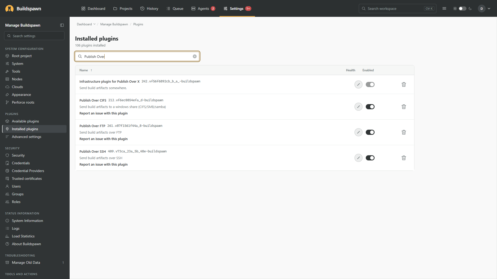

Plugins and updates
See which features are installed, turn them on or off, and add more with plugins.
A plugin adds a feature to Buildspawn, such as a build step, a version control system or a way to publish files. Buildspawn ships with all its plugins inside the download, already tested together. You don't need to install anything to start.
The plugin pages are under Settings › Plugins. Each page, with its fields, is also described in Management pages.
| Page | What it does |
|---|---|
| Installed plugins | Lists every plugin with its version. Turn plugins on or off, or remove them. |
| Available plugins | Lists plugins from the update site that are not installed yet. |
| Download progress | Shows plugins that are being downloaded and installed. |
| Advanced settings | Install a plugin from a file, and choose the update site. |
Installed plugins
Open Settings › Installed plugins. Type in Search installed plugins to find one by name.

Each row shows:
| Column | What it shows |
|---|---|
| Name | The plugin, its version and what it does. |
| Health | A score for how well the plugin is kept up. |
| Enabled | The switch turns the plugin on or off. A greyed switch means other plugins need this one, so it cannot be turned off. |
| Uninstall | The bin removes the plugin. |
Turning a plugin off or removing it takes effect after a restart. Build configurations that use its steps or settings stop working, so check first.
Add a plugin from the update site
- Open Settings › Available plugins. Click Check now to refresh the list.
- Search for the plugin and tick it.
- Click Install, or Install after restart to finish it on the next restart.
Add a plugin from a file
- Open Settings › Advanced settings.
- Under Deploy Plugin, choose the plugin File on your computer, or type a URL.
- Click Deploy, then restart Buildspawn.
Watch the download
After you click Install, the Download progress page opens. Each plugin shows its state until it is done. When all are done you can use the new plugins at once, or restart if one asks for it. See Download progress.
Updates
Buildspawn ships its plugins and does not update them one by one. A new Buildspawn version brings new versions of the plugins, tested with the rest. To update plugins, upgrade Buildspawn.
- A file for a plugin that is already installed is refused. To replace a bundled plugin on purpose, tick Replace the installed plugin under Deploy Plugin.
- The Update Site field in Advanced settings sets where Available plugins comes from.
Plugins you add yourself are kept in the data folder, so they survive an upgrade. After an upgrade, check that they still work with the new version.
Tips
- Add as few extra plugins as you can. Every plugin is code that runs inside your server.
- Try a new plugin on a test server first.
- Back up the data folder before you add or remove plugins. See Backups and upgrades.
- Plugins can add fields to the System page. See System settings.
- For a proxy that sits between the server and the update site, set the HTTP Proxy Configuration.